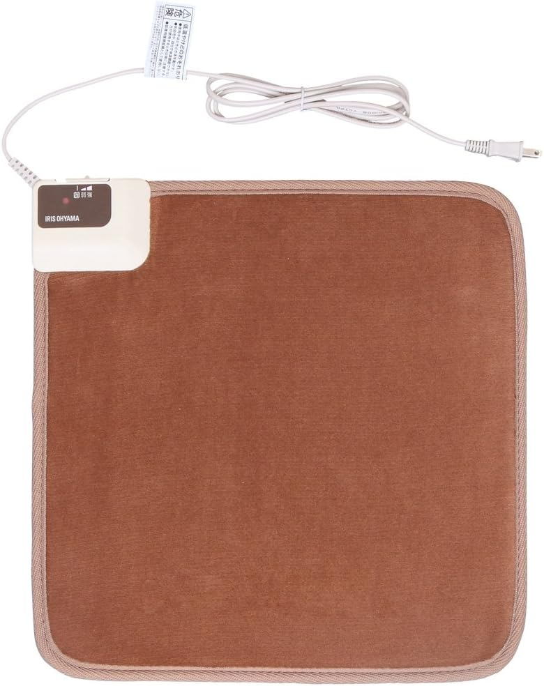
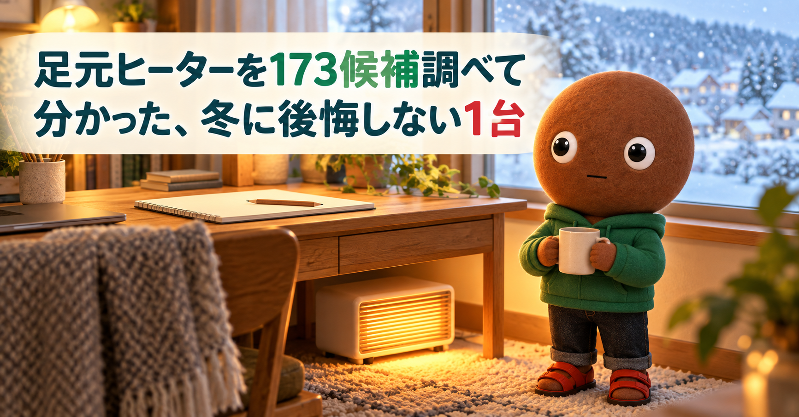
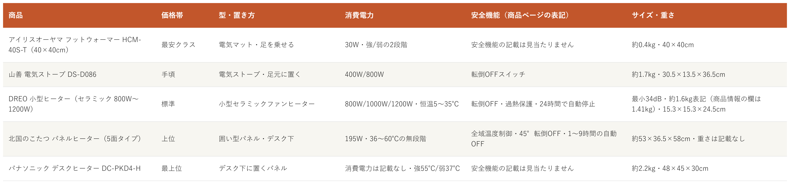

Amazonで見る冬支度で足元ヒーターを選びたいけれど、電気代と安全性で迷っている人へ
その足元ヒーター、
ワット数と安全機能を見ていますか？
電気マット・電気ストーブ・小型ファンヒーター・囲い型パネル・デスク下パネルまで、足元ヒーター173候補を調査。消費電力と安全機能、置き場所、静かさを確認し、使い方が重複しない5商品を比較しました。
自分に合う足元ヒーターを探す
この記事はAmazonアソシエイト・プログラムの参加者として、紹介料を得る場合があります（PR）。仕様は調査時点の情報です。
11月は、足元ヒーターを用意する人が増える時期です。173候補から、置き方の違う5商品に絞りました。まずは気になる1つへ。向いている人・向いていない人と、低評価レビュー、使うときの注意もまとめています。
173候補を調査
5商品に厳選
低評価レビューも確認済み
結論から先に言うと：
どこを温めたいか、消費電力をどこまで許せるか、どんな安全機能がほしいか。何を優先するかで1つを。
横にスワイプして、5商品を見比べる
選び方の基準は3つ
調べてわかったのは、基準は3つでした。
1つ目は「どこを温めたいか」。足の裏だけなら足を乗せるマット、足の前なら電気ストーブや小型ヒーター、ふくらはぎまで温めたいなら囲い型、膝下ならデスク下のパネル、というように、置き方が分かれます。今回の5商品は、足を乗せるマット、電気ストーブ、小型のセラミックファンヒーター、囲い型のパネル、デスク下に置くパネルです。
2つ目は「消費電力と安全機能」。消費電力は、30W（アイリスオーヤマ）から最大1200W（DREO）まで、約40倍の差がありました。安全機能は、転倒OFF（山善、DREO、北国のこたつ）、過熱保護（DREO）、全域温度制御と自動OFF（北国のこたつ）が書かれています。アイリスオーヤマとパナソニックは、商品ページの説明に安全機能の記載が見当たりませんでした。この記事では、電気代は金額を載せず、消費電力で比べています。
3つ目は「音と置き場所」。DREOは最小34dBと書かれています。ほかの4商品は、音の数字が商品ページに見当たりませんでした。サイズは、約0.4kgのマット（アイリスオーヤマ）から、約53×36.5×58cmの囲い型（北国のこたつ）までです。デスク下に入るか、椅子のキャスターに干渉しないかを、先に確認します。
比較表

価格帯・型と置き方・消費電力・安全機能・サイズと重さの比較（価格帯は、調査時点のAmazon出品価格の順に付けた目安です。価格は変動が大きく、商品ごとに差があります。消費電力・安全機能は商品ページの表記で、実際の暖かさや安全を保証する数字ではありません）
アイリスオーヤマ フットウォーマー HCM-40S-T（40×40cm）
- 最安クラス
- 電気マット・足を乗せる
- 30W・強/弱の2段階
- 安全機能の記載は見当たりません
- 約0.4kg・40×40cm
山善 電気ストーブ DS-D086
- 手頃
- 電気ストーブ・足元に置く
- 400W/800W
- 転倒OFFスイッチ
- 約1.7kg・30.5×13.5×36.5cm
DREO 小型ヒーター（セラミック 800W〜1200W）
- 標準
- 小型セラミックファンヒーター
- 800W/1000W/1200W・恒温5〜35℃
- 転倒OFF・過熱保護・24時間で自動停止
- 最小34dB・約1.6kg表記（商品情報の欄は1.41kg）・15.3×15.3×24.5cm
北国のこたつ パネルヒーター（5面タイプ）
- 上位
- 囲い型パネル・デスク下
- 195W・36〜60℃の無段階
- 全域温度制御・45°転倒OFF・1〜9時間の自動OFF
- 約53×36.5×58cm・重さは記載なし
パナソニック デスクヒーター DC-PKD4-H
- 最上位
- デスク下に置くパネル
- 消費電力は記載なし・強55℃/弱37℃
- 安全機能の記載は見当たりません
- 約2.2kg・48×45×30cm
向いてる人
- デスク下に敷いて、足の裏を温めたい人
- 消費電力を抑えたい人（30W）
- 使わない季節は、折りたたんで収納したい人（約0.4kg）
向いてない人
- 足の甲やふくらはぎまで温めたい人（レビューに、足の甲までは暖まりにくいという声）
- しっかり暖房したい人（レビューに、強でも体感は弱いという声）
- 過熱防止などの安全機能の表記を重視する人（商品ページの説明に見当たりません）
選ぶ決め手30Wの電気マットです。足の裏だけを、電気代を抑えて温める補助暖房として使う人向けの1台です。
低評価レビューを調べました
Amazonのレビューには、★3で、椅子に座って足元に敷くには温度が低すぎる、座面に長時間敷く使い方で体調に不調が出たという個人の体験談がありました。★4には、温度が強でも体感は弱く、足裏は暖かいが足の甲まではなかなか暖まらない、裏面が滑るので滑り止めを自分で塗った、という投稿があります（評価の内訳には、★1が4%、★2が3%あります）。個別の投稿の真偽までは確認できません。
参考：Amazon商品ページのレビュー（★3、★4）
アイリスオーヤマのフットウォーマーは、
足の裏を温めたい人に
最適な1台です。
消費電力は30W、
重さは約0.4kgです。
温度は強・弱の2段階で、
断熱シートを下に敷くと
保温効果が高まります。
向いてる人
- 足元を、すぐ温めたい人
- 転倒OFFスイッチ付きの、シンプルな電気ストーブがいい人
- 部屋やデスクの間で、持ち運んで使いたい人（約1.7kg）
向いてない人
- 消費電力を抑えたい人（400W・800Wです）
- ヒーターに近づいて使うと熱すぎると感じる人（レビューに、前に座るとかなり熱く、離れると暖かくないという声）
- コンセントから遠い場所に置きたい人（レビューに、コードがもう50cm長いと助かるという声）
選ぶ決め手400W・800Wの2段階と転倒OFFスイッチが付きます。足元を、手軽にすぐ温めたい人向けの定番の1台です。
低評価レビューを調べました
Amazonのレビューには、★3で、小さいのにとても熱くなる、前にいるとかなり熱く、弱にしても結構熱い、離れると暖かくないので使い方が難しい、という投稿がありました。★4には、コードがもう50cmほど長いと助かる、延長コードは熱を持つものもあると思うので直接コンセントにつなぎたい、北海道などの厳冬地では2月は無理、という投稿があります（評価の内訳には、★1が2%、★2が3%あります）。個別の投稿の真偽までは確認できません。
参考：Amazon商品ページのレビュー（★3、★4）
山善の電気ストーブは、
足元を手軽に温めたい人に
最適な1台です。
消費電力は800W、
400Wと800Wの2段階です。
転倒OFFスイッチが付き、
重さは約1.7kgです。
向いてる人
- 音が気になる人（最小34dBの表記）
- 転倒OFF・過熱保護・切り忘れ防止の表記を重視する人
- リモコンで、温度や運転を手元で変えたい人
向いてない人
- 消費電力を抑えたい人（最大1200Wです）
- 強運転の音も気にしたくない人（レビューに、強運転ではファンの音がそれなりにするという声）
- 評価の件数を、日本向けのレビューだけで見たい人（同じページに、海外のレビューも表示されます）
選ぶ決め手最小34dBの静かさと、転倒OFF・過熱保護・切り忘れ防止の3つの安全機能が書かれています。温風で足元をすぐ温めたい人向けの1台です。
低評価レビューを調べました
Amazonのレビューには、★4で、パワフルなので長時間の暖房には電気代が気になる、強運転ではファンの音がそれなりにする、足元用の補助暖房に向く、という投稿がありました（Amazon Vineの投稿です）。★2には、数週間の使用で動かなくなった、という海外の投稿があります（2024年、旧モデルのゴールド）。★5には、瞬間的に1500Wを使うと思った方がよく、ポータブル電源の容量に注意、という投稿もありました（評価の内訳には、★1が4%、★2が1%あります）。個別の投稿の真偽までは確認できません。
参考：Amazon商品ページのレビュー（★2、★4、★5）
DREOの小型ヒーターは、
静かな温風で足元を温めたい人に
最適な1台です。
最小34dBで、
出力は800W・1000W・1200Wです。
転倒OFF・過熱保護・
24時間で自動停止の
3つの安全機能があります。
向いてる人
- 足先だけでなく、ふくらはぎまで温めたい人
- 消費電力を抑えたい人（195Wの表記）
- タイマーと転倒OFFなど、安全機能の表記が多い方がいい人
向いてない人
- 置き場所を取りたくない人（サイズは約53×36.5×58cmです。同じページのシリーズ表の表記で、重さは記載なしです）
- 電源コードの位置を選びたい人（レビューに、コードの取り付け位置が右側だけという声）
- スイッチの見やすさを重視する人（レビューに、スイッチが内側で見づらく使いづらいという声）
選ぶ決め手足元を囲んで、ふくらはぎまで温めます。消費電力は195Wで、温度は無段階、タイマーと転倒OFFも書かれています。デスク下で長く使う人向けの1台です。
低評価レビューを調べました
Amazonのレビューには、★3で、暖かくて良いが、スイッチが内側にあって見づらく、使いづらい、という投稿がありました（5面タイプの投稿です）。★5には、コードの取り付け位置が向かって右側だけで、コンセントが左側だと配線がごちゃつく、という投稿と、中国製なので耐久性がどれくらいかが問題、という投稿があります。このページは、5面と筒型が同じ商品ページで、レビューも混ざっています（評価の内訳には、★1が4%、★2が4%あります）。個別の投稿の真偽までは確認できません。
参考：Amazon商品ページのレビュー（★3、★5）
北国のこたつのパネルヒーターは、
ふくらはぎまで温めたい人に
最適な1台です。
4面発熱で消費電力は195W、
温度は36℃から60℃まで無段階です。
全域温度制御・転倒OFF・
自動OFFが付き、保証は合計2年です。
向いてる人
- デスク下に置いて、膝下を温めたい人（サイズ48×45×30cm）
- 定番ブランドの商品を選びたい人
- 長く使った人のレビューを参考にしたい人（5年使っているという投稿）
向いてない人
- しっかり暖房したい人（レビューに、そこまで熱を発しないという声）
- 価格を抑えたい人（今回の5商品の中で、価格帯は最上位です）
- 安全機能の表記を重視する人（商品ページの説明に見当たりません）
選ぶ決め手強55℃・弱37℃の2段階です。デスク下に収まる大きさの、定番ブランドの1台です。長く使っているレビューも見つかりました。
低評価レビューを調べました
Amazonのレビューには、★3で、足元がほんのり温かい、強でしか使わないかな、という投稿がありました。★4には、そこまで熱を発するものではないので寒がりの人や厳しい冬の地域では同じ使い方はできない、ちょっと高すぎる気がする、という投稿と、8時間以上使うので強のままだと低温やけどが怖く、弱がちょうどいい、コードがなければもっとスマート、という投稿があります。また、説明書には布を掛けないよう書かれているが、自己責任でひざ掛けを掛けて使っているという投稿もありました（評価の内訳には、★1が4%、★2が1%あります）。個別の投稿の真偽までは確認できません。
参考：Amazon商品ページのレビュー（★3、★4、★5）
パナソニックのデスクヒーターは、
デスク下で膝下を温めたい人に
最適な1台です。
温度は強55℃・弱37℃の2段階で、
重さは約2.2kgです。
サイズは48×45×30cmで、
メーカー保証は1年間です。
173候補をどう絞った？ 調査の経緯を見る
足元ヒーターは、電気マット、電気ストーブ、小型のファンヒーター、パネルヒーターと、種類が多く、消費電力も約40倍違います。「思ったより暖かくない」「電気代が心配」「音が気になる」という迷いが起きやすい道具です。正直どれを選べばいいのか迷います。
なので今回、足元ヒーターの仕様を調べて比較しました。各商品ごとに、向いてる人・向いてない人も調べているので、自分に合う1つを探してみてください。
173候補から5つに絞り込みました
Amazonで「足元ヒーター」「デスクヒーター」「パネルヒーター 足元 デスク下」「フットウォーマー 電気足温器」「セラミックヒーター 足元 小型」「電気ストーブ 足元 小型」の6つの言葉で検索し、検索結果に出た585件（同じ商品の重複を含みます）を一覧で確認しました。そのうち、評価4.0以上は385件、さらに評価の件数が30件以上のものは212件で、色違いやサイズ違いを同じ商品とみなすと173候補でした。種類の内訳は、セラミックファンヒーターが約67件、電気マット・足温器が約42件、パネルヒーターが約31件、電気ストーブが約28件です（件数は、商品名からの機械的な分類で、概数です）。採用した5商品は個別の商品ページまで開いて、評価と件数、主な仕様を確認しました。見送った商品の評価と件数は、検索結果に表示されていた値です。
採用したのは、アイリスオーヤマ HCM-40S-T（足を乗せるマット・30W）、山善 DS-D086（電気ストーブ）、DREO 小型ヒーター（静かな温風）、北国のこたつ パネルヒーター 5面（囲い型）、パナソニック DC-PKD4-H（デスク下パネル）の5つです。
マットの枠では、アイリスオーヤマの60×60cm（評価4.1・3,830件）、山善の40×40cmマット（評価4.2・441件）が重なります。HCM-40S-Tは、評価4.1・3,830件で、デスク下に置きやすい40×40cmのため選びました。60×60cmは、同じシリーズで使い方が重なるため見送りました。
電気ストーブの枠では、アイリスオーヤマ EHT-800W（評価4.3・4,534件）、山善 DS-F041（評価4.3・694件）、サインキングダム 400W/800W（評価4.3・639件）がありました。山善 DS-D086は、評価4.3・5,716件と、件数が最も多く、転倒OFFスイッチの表記があるため選びました。ほかの3つは、同じ400W・800W前後の電気ストーブで使い方が重なるため見送りました。
ファンヒーターの枠では、DREOの別型（小型電気ストーブ700W〜1200W：評価4.6・25,963件、足元・脚元1200W：評価4.6・3,631件）、デロンギ カプスーラ（評価4.2・266件）などがありました。DREOの800W〜1200Wは、評価4.6・17,600件で、最小34dBの静音と3つの安全機能が書かれているため選びました。DREOの別型は、同じブランドで使い方が重なるため見送りました。
パネルヒーターの枠では、Sumeriy 四面発熱（評価4.4・865件）、TOKAIZ 7面発熱（評価4.3・178件）、アイリスオーヤマ ぐるポカ（評価4.2・67件）、パナソニック DC-PK4（評価4.1・855件）、パナソニック DC-PKD3（評価4.2・435件）がありました。北国のこたつの5面は、評価4.3・2,037件（サイズ違いを含む）で、足元を囲んでふくらはぎまで温める作りと、消費電力195W・安全機能の表記があるため選びました。パナソニック DC-PKD4-Hは、評価4.4・370件で、定番ブランドのデスク下パネルとして選びました。パナソニックの別型は、同じブランドで使い方が重なるため見送りました。
手元を温める加熱デスクマット、足を入れる電気スリッパなどは、検索結果に出ましたが、足元に置いて使う今回の使い方とは違うため、対象にしませんでした。また、評価が5.0などの高い数字でも、評価の件数が少ない商品は、判断材料が足りないため選びませんでした。
低評価の商品も見ました
5商品それぞれについて、Amazon商品ページに表示されていた範囲のレビューを確認しました（ログインしないと見られる、星の低いレビューだけの一覧は確認できていません）。個別レビューの真偽までは検証できないため、確認できた範囲の傾向としてまとめています。ネット検索では、各商品の低評価を独立して検証した記事は、今回は確認していません。
確認できた指摘は、アイリスオーヤマの温度の低さと足の甲まで暖まりにくい点（2件）と裏面の滑り（1件）、山善の近いと熱すぎて離れると暖かくない点（1件）とコードの短さ（1件）、DREOの強運転の音と電気代（1件）と海外の旧モデルの故障（1件）、北国のこたつのスイッチの使いにくさ（1件）とコード位置（1件）、パナソニックの熱の弱さ（2件）と価格の高さ（1件）です。
調べてみて驚いたこと
調査中、消費電力の差に驚きました。足を乗せるマットは30W、囲い型パネルは195W、電気ストーブは400W・800W、小型ファンヒーターは最大1200Wで、約40倍の差があります。ただし、消費電力が大きいほど暖かいとは限りません。アイリスオーヤマのレビューには、強でも体感は弱い、足の甲までは暖まりにくいという投稿があり、パナソニックのレビューにも、そこまで熱を発しないという投稿がありました。
もう1つ驚いたのは、同じ商品ページの中で、数字や条件が食い違うものがあったことです。DREOは重さが「約1.6kg」と「1.41kg」でした。北国のこたつは、5面と筒型が同じ商品ページで、レビューも混ざっています。DREOの評価件数（17,600件）には、海外のレビューも表示されていました。数字が複数ある場合は、購入前にメーカーの仕様で確認するのが安全です。
さらに、パナソニックは、この商品ページの販売元がパナソニックではなくPLUS YU（プラスユウ）でした。この記事では金額を載せず、相対的な目安で示しています。購入前に、Amazonの販売元と価格を確認してください。
つまり、ワット数の大きさより、どこを温めたいか（置き方）、どんな安全機能があるか、どれくらいの音と大きさまで許せるかで選ぶのが大事だと分かりました。
足元ヒーターを使うときの注意
ここでは、今回確認できた根拠のある注意だけを載せます。
電気ストーブ（山善）は、転倒OFFスイッチが付いていますが、レビューに、前に近づくとかなり熱いという投稿があります。置く位置は、取扱説明書で確認します。電源コードは1.6mで、レビューには、延長コードは熱を持つものもあると思うので直接コンセントにつなぎたい、という投稿がありました。
マット（アイリスオーヤマ）は、商品ページが、熱が逃げやすい床では下に断熱シートを敷くと保温効果が高まると書いています。レビューには、裏面が滑るという投稿と、座面に長時間敷いて体調に不調が出たという個人の体験談がありました。
パネルヒーターは、布の扱いが商品で違います。北国のこたつのページは、天板が発熱しないため、天板の上に毛布を掛けて使えると書いています。パナソニックのレビューには、説明書には布を掛けないよう書かれているという投稿があります。ヒーターに布を掛けてよいかどうかは、必ず取扱説明書で確認します。
低温やけどは、パナソニックのレビューに、長時間は強のままだと低温やけどが怖いという投稿があり、北国のこたつのページも、36℃という低めの温度から調節できる点を挙げています。長時間使うときは、温度とタイマーの設定を見直します。数字は、メーカーや販売ページの表記です。実際の暖かさや安全を保証するものではありません。この記事は、購入や使用の判断を助けるための調査で、設置と使用は、取扱説明書の確認が前提です。
迷ったらこれ
ここまで読んでも迷ったら、デスク下で長く使う前提なら、消費電力195Wの表記で、全域温度制御・転倒OFF・自動OFFも書かれている、北国のこたつ パネルヒーターが、一番外しにくいと考えます（評価は4.3、2,037件。サイズ違いを含みます）。安全機能の数字は、販売ページの表記です。音を最優先にするなら、最小34dBのDREOも選択肢です。
Amazonで見る→よくある質問
Q. 電気代は、どれくらい違いますか。
A. 今回の5商品の消費電力は、30W（アイリスオーヤマ）、195W（北国のこたつ）、400W・800W（山善）、最大1200W（DREO）です。パナソニックは、消費電力の数字が商品ページに見当たらず、1時間あたりの電気代の目安が書かれています。この記事では金額を載せていません。電気代は消費電力と使う時間で変わるため、購入前に確認してください。
Q. 足元だけ温めるなら、どの種類が向いていますか。
A. 商品ページの説明では、DREOが「メイン暖房の補助として、足元などをピンポイントで温める」、パナソニックが「ひざ下を暖める」、北国のこたつが「足元からふくらはぎまで」と書いています。アイリスオーヤマのレビューには、足の甲までは暖まりにくいという声がありました。
Q. 安全機能は、どう見ればいいですか。
A. 転倒OFF（山善、DREO、北国のこたつ）、過熱保護（DREO）、自動OFFや切り忘れ防止（DREO、北国のこたつ）が書かれています。アイリスオーヤマとパナソニックは、商品ページの説明に見当たりませんでした。書かれていないことと、機能が無いことは同じではないため、気になる場合は、取扱説明書やメーカーに確認してください。
Q. ファンヒーターは、足元に向いていますか。
A. DREOの商品ページは、補助暖房として足元をピンポイントで温める使い方を挙げています。Amazon Vineのレビューにも、足元用の補助暖房に向く、という投稿がありました。ただし、最大1200Wで、強運転では音がそれなりにするという投稿もあります。
こんな記事も書いてます
ミートボーの調査部屋で他の記事も見る（全本）ミートボーの調査で他の記事も見る（全本）


この記事はAmazonアソシエイト・プログラムの参加者として、紹介料を得る場合があります（PR）。
出典
- Amazon.co.jp アイリスオーヤマ フットウォーマー HCM-40S-T（40×40cm）：amazon.co.jp
- Amazon.co.jp 山善 電気ストーブ DS-D086：amazon.co.jp
- Amazon.co.jp DREO 小型ヒーター（セラミック 800W〜1200W）：amazon.co.jp
- Amazon.co.jp 北国のこたつ パネルヒーター（5面タイプ）：amazon.co.jp
- Amazon.co.jp パナソニック デスクヒーター DC-PKD4-H：amazon.co.jp